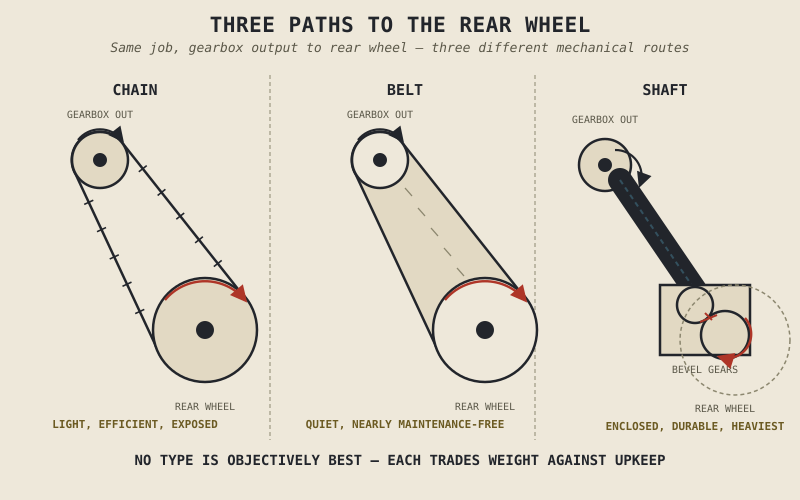

Every motorcycle has to get power from the gearbox's output shaft, sitting somewhere near the middle of the bike, back to a rear wheel a foot or more behind it — and there are exactly three fundamentally different ways to bridge that gap, none of which is simply better than the others once you look honestly at what each one costs. This chapter covers all three: chain, belt, and shaft drive, the last mechanical link in the journey Chapter 3.1 first mapped out from crankshaft to road.
Chain Drive: Light, Efficient, and Demanding
A chain drive uses a roller chain looping between a small front sprocket on the gearbox's output shaft and a larger rear sprocket on the wheel — the same sprockets Chapter 3.4 already identified as the easiest way to adjust a bike's overall gearing without touching the gearbox itself. It's the lightest of the three final drive options, and mechanically among the most efficient, typically losing only a small percentage of the power passing through it to friction, less than either of the alternatives this chapter covers.
That efficiency and light weight come with real upkeep obligations. A chain runs exposed to the elements, picking up dirt, water, and road grime, and its many individual pins and bushings gradually wear, causing the chain to stretch and requiring periodic tension adjustment to keep it running correctly. Left uncleaned, unlubricated, or under-tensioned for long enough, a chain can wear badly enough to jump a sprocket or, in a rare but serious failure, snap outright — precisely the kind of traceable, preventable failure Chapter 2.20 described, just relocated to the final drive rather than the engine itself.
Belt Drive: Quiet and Nearly Maintenance-Free
A belt drive replaces the chain with a reinforced, toothed rubber belt, typically strengthened internally with fibers like Kevlar, running between similarly toothed pulleys. It needs no lubrication, doesn't rust, and doesn't stretch the way a chain's metal links gradually do, making it close to maintenance-free for the length of its service life — a genuinely appealing trait for a bike built around relaxed, low-fuss ownership, which is exactly why belt drives are common on cruisers and touring motorcycles.
The trade runs in the direction Chapter 3.4 would predict: changing a belt-driven bike's overall gearing isn't as simple as swapping a sprocket, since the belt itself has to be the correct length for whatever pulley combination is fitted, making gearing changes considerably less convenient than on a chain-driven bike. Belt drives have historically also been somewhat less common on the highest-performance, most torque-demanding motorcycles, though modern belt materials have narrowed that gap considerably from where it once stood.
Chain, belt, and shaft aren't ranked from worst to best. Each one trades weight, efficiency, maintenance, and gearing flexibility against the others in a different proportion — and the right choice depends entirely on what kind of riding the bike is actually built for.

Chain, belt, and shaft final drive systems shown side by side, each connecting the gearbox output to the rear wheel through a different mechanical path.
Shaft Drive: Enclosed, Durable, and Its Own Quirk
A shaft drive routes power through an enclosed shaft running from the gearbox to a set of bevel gears at the rear wheel, fully sealed away from dirt, water, and road grime entirely. It's the most durable and lowest-maintenance option of the three, genuinely capable of running for the life of the motorcycle without the periodic attention a chain demands or even the eventual replacement a belt eventually needs, and it leaves nothing exposed to fling grime onto the rest of the bike the way an open chain can.
That durability comes wrapped in real costs. A shaft, its housing, and its bevel gears are meaningfully heavier than either a chain or a belt system, and the bevel gear meshes introduce a small additional efficiency loss beyond what a chain typically costs. Shaft drive also introduces a genuine mechanical quirk not present in quite the same form on a chain or belt: as the shaft transmits torque through its bevel gears, the reaction force can cause the rear of the bike to rise or squat slightly under acceleration, an effect sometimes called shaft jacking, which interacts directly with the rear suspension's behaviour under power — a preview of exactly the kind of suspension-and-drivetrain interaction Part V will cover once it takes up suspension design in full.
A Common Misconception, Cleared Up Early
It's tempting to look for the objectively best final drive the way it's tempting to look for the objectively best cylinder layout or camshaft profile — and exactly as with those earlier chapters, the honest answer is that none of the three is universally superior. Chain drive wins on weight, efficiency, and gearing flexibility, at the cost of real maintenance. Belt drive wins on cleanliness and low maintenance, at the cost of gearing flexibility and, historically, some ultimate torque capacity. Shaft drive wins on durability and cleanliness most completely, at the cost of weight and its own suspension interaction. A manufacturer's choice among the three says more about the bike's intended use — sport performance, relaxed touring, low-maintenance commuting — than it says about which technology is more advanced.
Where This Leads
This chapter completes the mechanical chain Chapter 3.1 first mapped out: clutch, gearbox, and now final drive, together carrying the engine's torque curve all the way to the rear wheel. Chapter 3.7 closes Part III the way Chapter 2.21 closed Part II — stepping back to ask how everything covered in this part connects to the rest of the motorcycle Chapter 1.3 insisted you keep seeing as one coupled system.
Key Concepts to Remember
- Chain drive is the lightest and most mechanically efficient final drive option, and the easiest to re-gear, at the cost of regular cleaning, lubrication, and tension maintenance.
- Belt drive is nearly maintenance-free and quiet, at the cost of less convenient gearing changes and, historically, somewhat lower torque capacity than a chain.
- Shaft drive is the most durable and cleanest option, fully enclosed against the elements, at the cost of added weight and a distinct torque-reaction effect on the rear suspension.
- No final drive type is objectively best — each trades weight, efficiency, maintenance, and gearing flexibility differently, matched to the kind of riding a given motorcycle is built for.
Cross-References
| ← Ch. 3.1 | First named the final drive as the last stage in the chain from crankshaft to road; this chapter covers that stage in full. |
| ← Ch. 3.4 | Established sprocket changes as an easy way to adjust overall gearing; this chapter shows why that convenience is chain-specific and doesn't transfer as easily to belt or shaft drive. |
| ← Ch. 2.20 | Established that mechanical failures trace to specific, identifiable causes; this chapter applies that same idea to chain wear and failure. |
| → Pt. V | Suspension will return to the shaft-jacking effect introduced here as part of its full treatment of suspension behaviour under acceleration. (Not yet published.) |
| → Ch. 3.7 | Closes Part III, tying the entire transmission chain back to the rest of the motorcycle as one coupled system. |